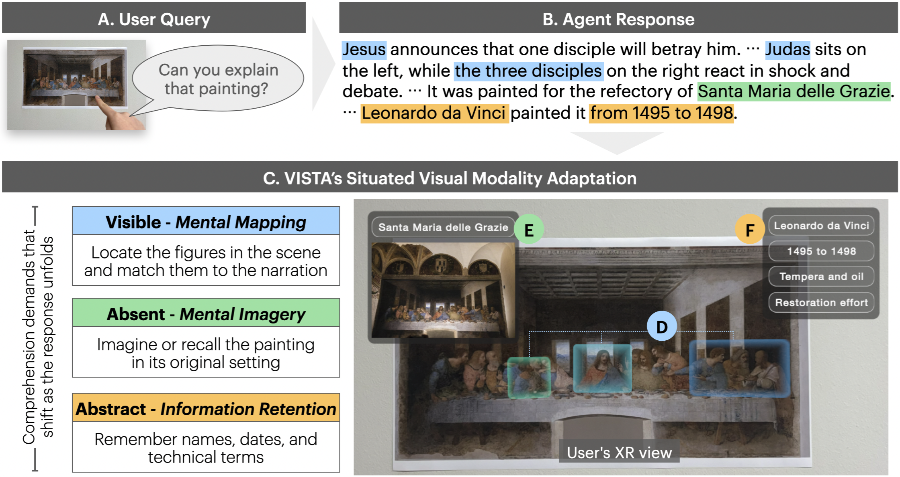
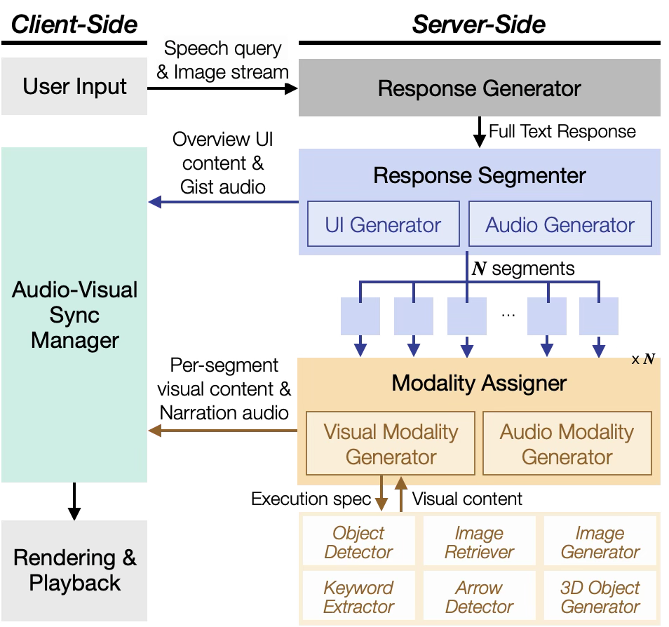
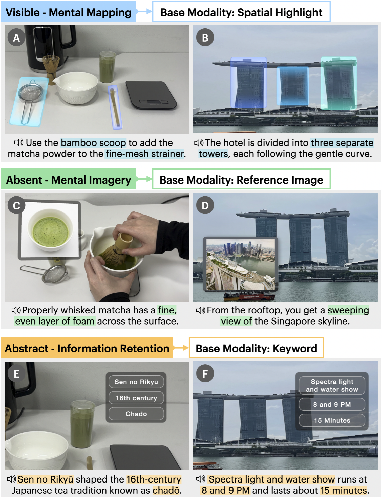
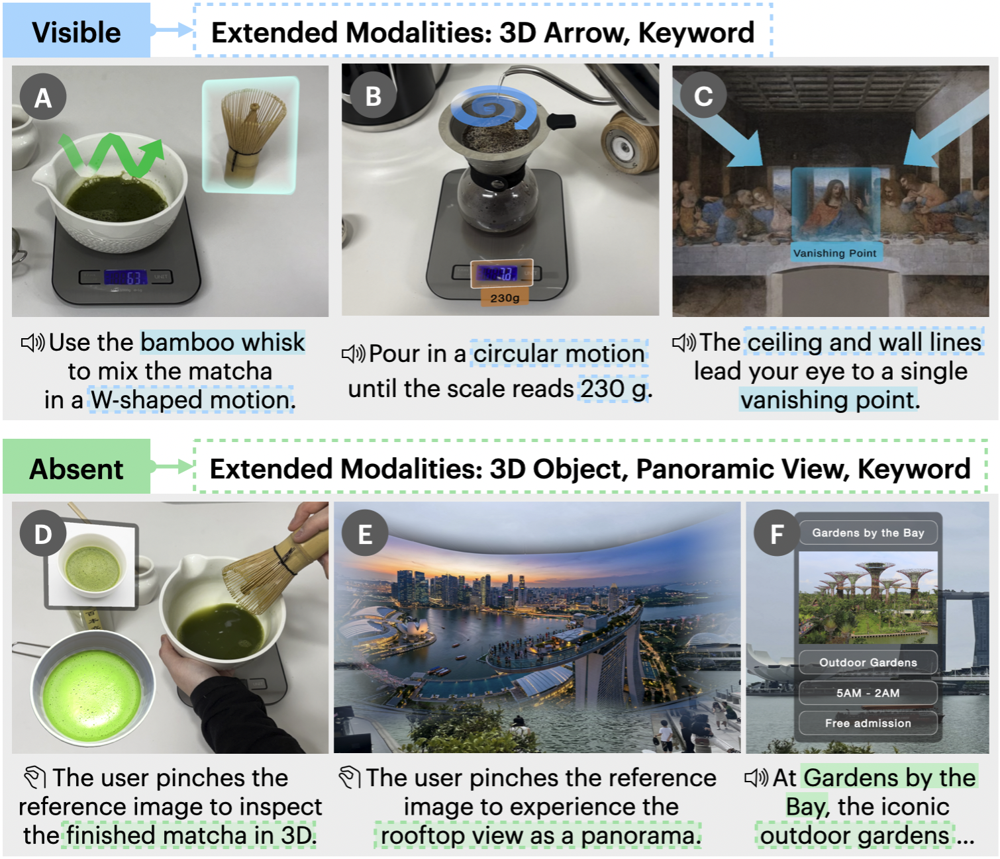

Situated Visual Modality Adaptation
for Spoken VLM Responses in XR
System demonstration of Vista
Each scenario demonstrates Vista's end-to-end pipeline in a different real-world context.
Spatial highlights and keywords guide your gaze through the mural reproduction, helping you quickly see where to look and how the composition is organized. Web searched imagery and a generated panoramic view help you understand the original space where the work was painted.
During a presentation about the Mars rover, you may want to go beyond what appears on the slide. You can inspect the visible parts, learn their roles, and bring on-the-fly generated power-management components into your space as a 3D object.
If you are using a coffee machine for the first time, you can see which parts are needed at each step and where they should go through intuitive 3D arrows. If an off-screen item such as a cup is needed, you are shown the generated object and where it should be placed in the real world.
While traveling abroad, you may want a tasty instant noodle that is not spicy. You can compare unfamiliar options by flavor profile and preview representative cooked bowls before you shop.
As you follow a step-by-step matcha guide, spatial highlights direct your attention to the tools you need. A reference image shows the target froth texture, while keywords keep water temperature and ratios visible.
We present Vista, an XR agent system that delivers free-form, information-rich VLM responses with adaptive visual support to improve comprehension and reduce cognitive load. A response can shift among visible objects, absent content, and abstract facts, requiring users to locate, imagine, and retain information while listening. Existing XR agents, however, typically deliver every response in one fixed visual form that supports only a single demand. To address this, we present situated visual modality adaptation, an approach that (i) adapts visual support as the demand changes within a response and (ii) synchronizes each cue with the narration. The key idea is to use the response–scene relation, i.e., how the described content relates to the user's physical surroundings, to select and generate matched visual support at run time. We performed a user study and interviews with a working prototype, and participants showed improved comprehension with lower workload compared to an audio-with-text baseline.
A single response can shift among visible objects, absent content, and abstract facts. Vista classifies each part of a response by its response–scene relation, how the described content relates to the user's physical surroundings, and selects matched visual support at run time. Visible content imposes a mental mapping demand, so spatial highlights guide the user's gaze to each described target. Absent content imposes a mental imagery demand, so a reference image externalizes what the user would otherwise have to imagine. Abstract content is difficult to retain, so pinned keywords keep names, dates, and terms in view.

Given a user's query and egocentric view (A), the VLM generates a free-form response (B). Vista generates visual support for three comprehension demands at run time (C): spatial highlights (D), a reference image (E), and pinned keywords (F).
Vista transforms a free-form VLM response into a synchronized audio-visual presentation. The overview and its spoken gist arrive as soon as segmentation completes, and each segment becomes playable when its own assets are ready.

System overview of Vista.
Produces a detailed response grounded in the user's egocentric view and speech query.
Splits the response at transitions of the response–scene relation and builds a navigable overview with a spoken gist.
Selects the base and extended visual modalities for each segment and extracts retention-critical keywords.
Generates visual assets in parallel and inserts timing marks and pauses into the narration via SSML.
Activates each visual cue on the client the moment the narration reaches its content.
Each segment carries one response–scene relation. A base modality serves its primary demand, and extended modalities cover needs the base alone does not.
Spatial highlights anchor a semi-transparent box to each described target. A 3D arrow traces motion or direction, such as a W-shaped whisking stroke, and keywords hold values like a scale reading.
A reference image is retrieved by search or generated on the user's own object. Pinching it opens an interactive 3D object for closer inspection or a panoramic view of the described place.
Unfamiliar terms, precise values, and proper names are pinned as concise keywords that stay visible throughout the narration.
Examples of base modalities for Visible, Absent, and Abstract content in matcha preparation (left) and sightseeing (right).

Extended modalities for Visible content (A–C) and Absent content (D–F).
